支持游戏版本：v1.1.1 · v1.1.2 · v1.1.3
Windows · V3 / V4 / BLE · Secret Flasher Manaka
Manaka × DG-LAB
控制中心
连接 Manaka 与郊狼、负鼠和腰带骑士设备。支持 V3 / V4 扫码与电脑蓝牙直连，按心率、动作或游戏档位联动。公开版不包含游戏本体或第三方 Mod。
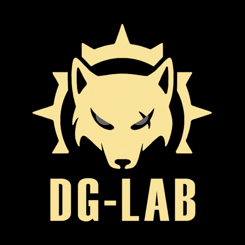
VERSION 1.2.0
蓝牙直连，腰带骑士加入联动
保留现有游戏策略，新增设备、HUD 显示和更方便的批量配置。
v1.2.0 下载通道正在准备，请以下载区显示的版本为准。
- 电脑蓝牙直连郊狼 2.0 / 3.0 与负鼠可直接连接电脑；扫描后连接，各设备手动启用。V3 / V4 扫码路线仍可选择。
- 腰带骑士工作台FN010-RX 独立连接，设置伸缩档位上限、伴随振动和动作覆盖；随机模式跟随游戏实际速度。
- 腰带骑士也加入 HUD显示伸缩、振动的请求档位与连接状态，可独立隐藏；大小、透明度和位置仍可调整。
- 动作波形批量设置支持当前筛选内全选、反选和批量应用；负鼠 A/B 保持独立，也可使用自定义波形。
另外支持修改 V3 / V4 Socket 端口，并改善负鼠自定义动作波形的应用。
升级提示：关闭游戏和旧控制中心，在新版「设备与游戏」执行「安装 / 修复运行环境」，再重启游戏。新版遥测 0.5.2 用于随机活塞速度与 HUD V3。
腰带骑士 FN010-RX 为实验性蓝牙适配。HUD 数字为请求档位；不同硬件与固件的实测范围请见更新说明。
核心功能
MANAKA NPC VOICES · 新功能
让附近的 NPC 真正做出反应
插件会结合距离与游戏状态，在警觉、发现、失败和互动阶段播放对应的日语语气词与字幕，不再只是随机播报。
- 情境触发距离、警戒、发现、失败与 Aftermath 互动阶段分别处理
- 角色差异青年 / 老人、男性 / 女性使用不同反应池
- 可编辑字幕在控制中心修改中、日、英文本，语音统一使用日语语气词
- 完全离线一键安装、总开关与播放设置，游戏中不会调用任何 API
 实机预览：显示 NPC 类型、距离与当前反应字幕
实机预览：显示 NPC 类型、距离与当前反应字幕
选择下载通道
大陆用户优先使用百度网盘；腾讯 COS 提供高速直链，海外用户可使用 GitHub Release。
百度网盘大陆推荐
适合中国大陆用户。提取码：sdu4，打开分享页后保存或下载完整压缩包。
打开百度网盘大陆高速直链备用
腾讯云 COS 中国大陆节点，点击后直接下载，无需进入网盘或 GitHub 页面。
从腾讯 COS 下载海外镜像备用
GitHub Release 官方发布文件，适合海外网络或 COS 通道临时不可用时使用。
从 GitHub Release 下载GitHub 版待发布，请先使用百度网盘或 COS。
版本 v1.2.0SHA-256
D85E0A7AE742DE2C5C71B47257F2595C3BFE4985A7C335C4780B2199625327C3程序界面
v1.2.0 控制中心界面预览，含腰带骑士工作台与 HUD 设置。

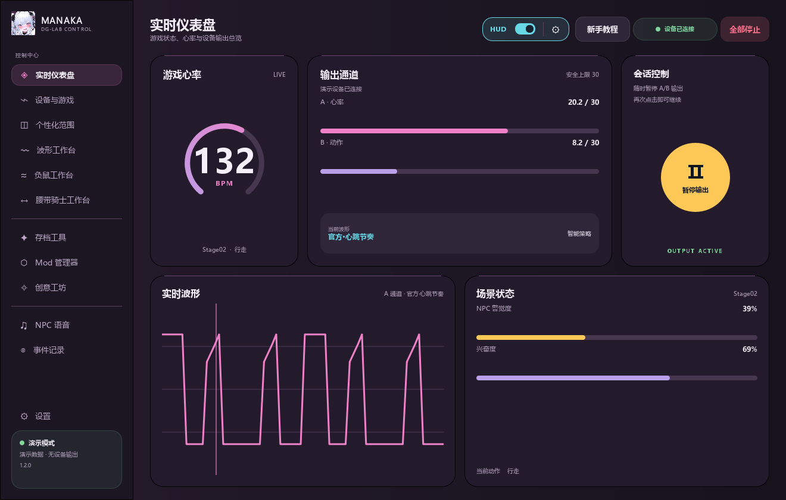

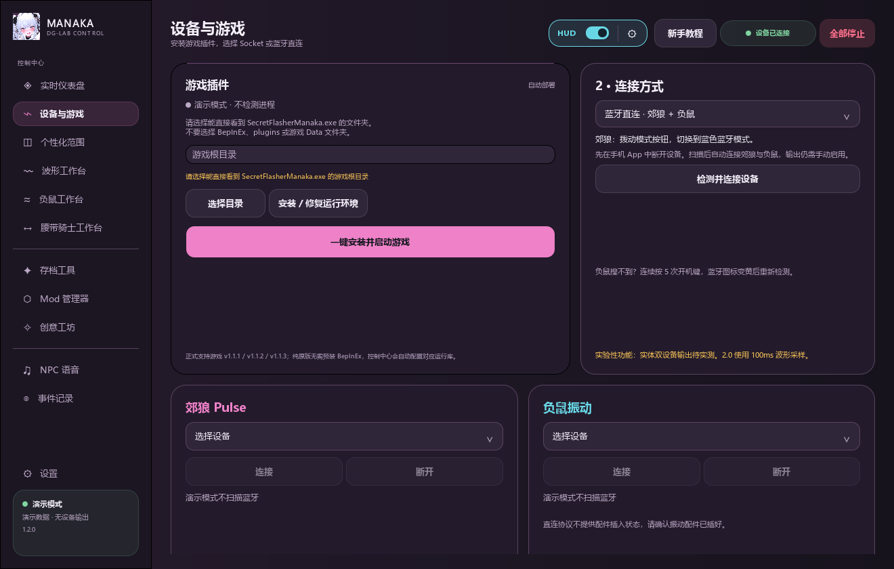

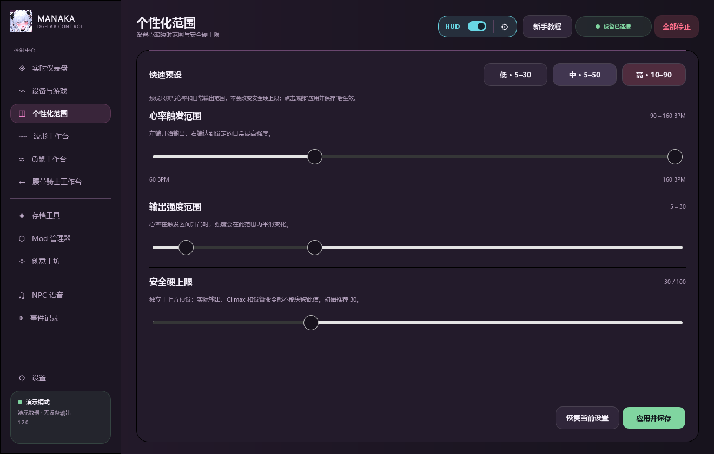

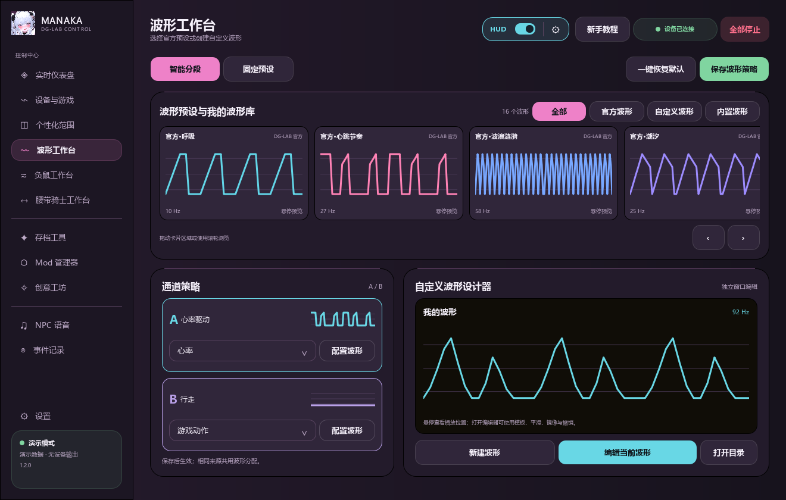

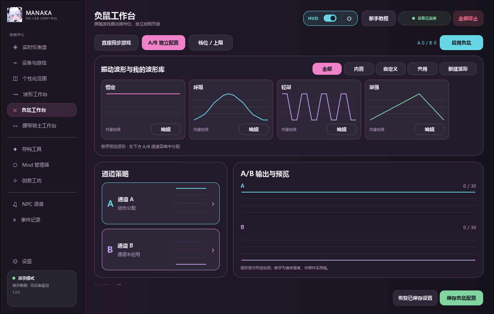

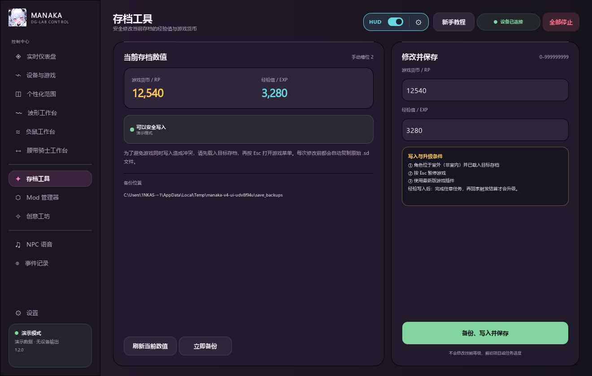

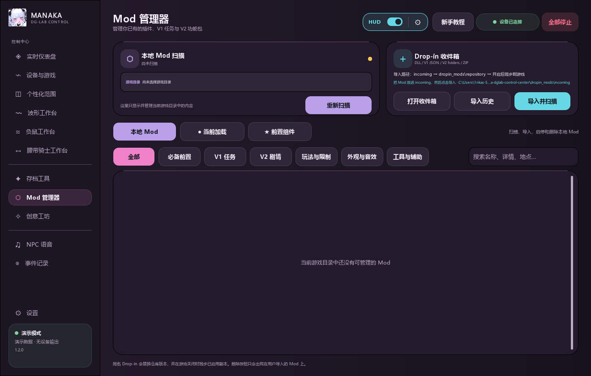

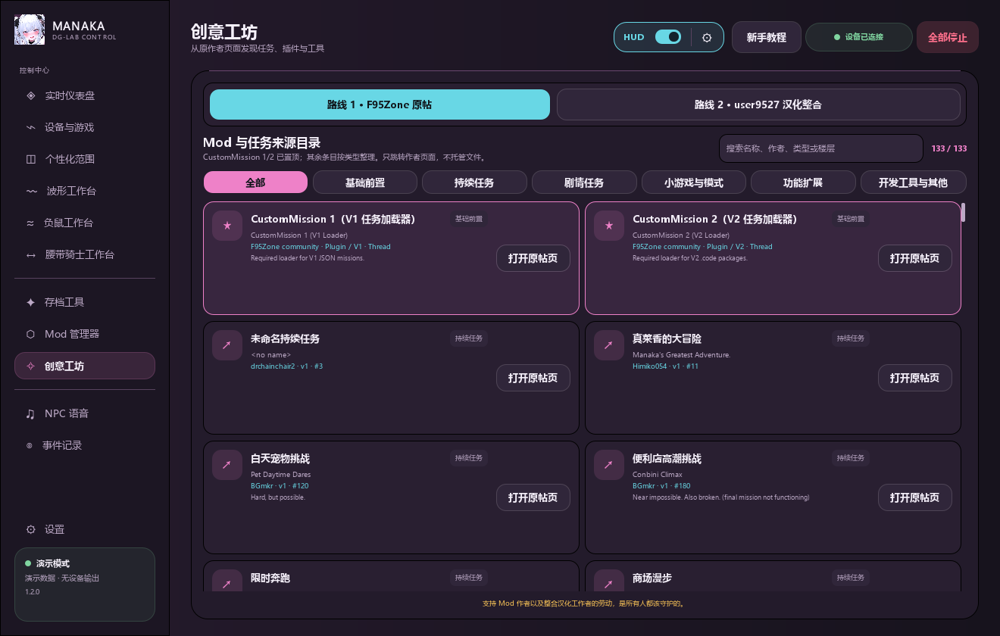

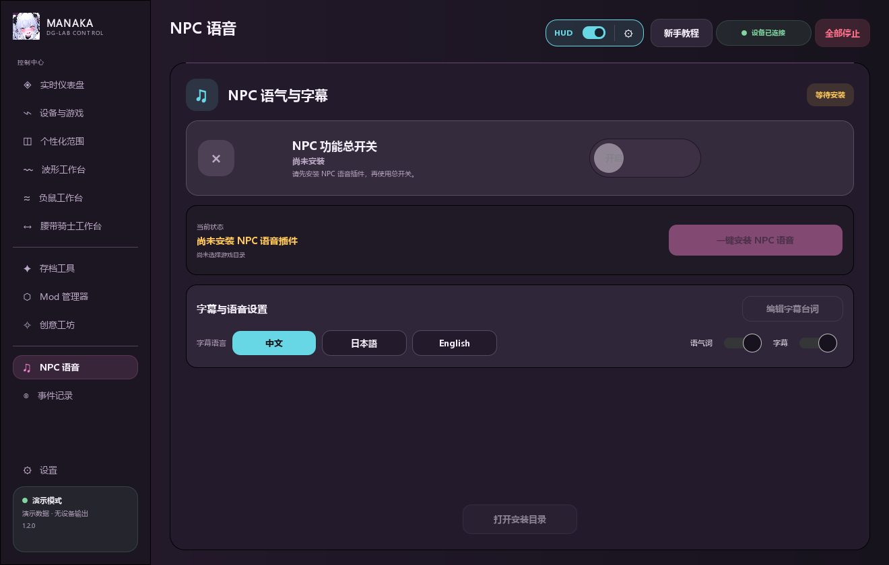

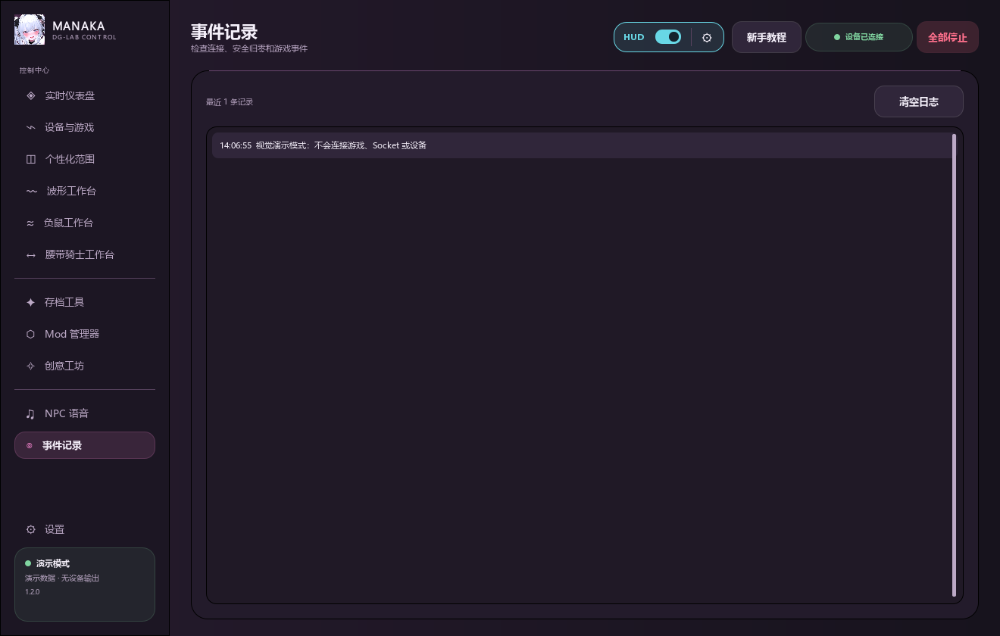

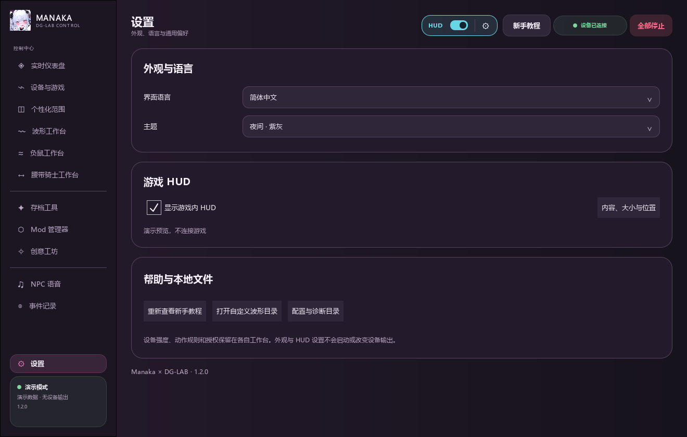

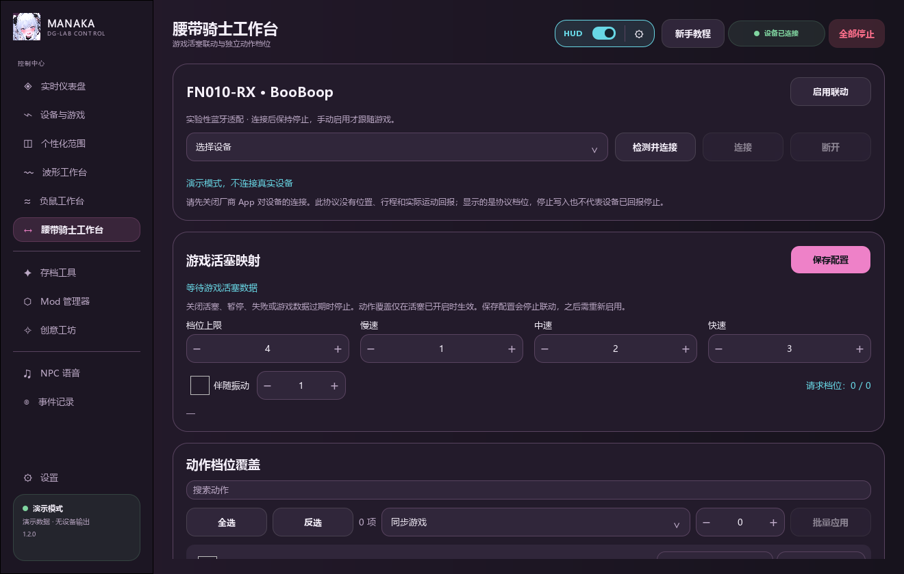

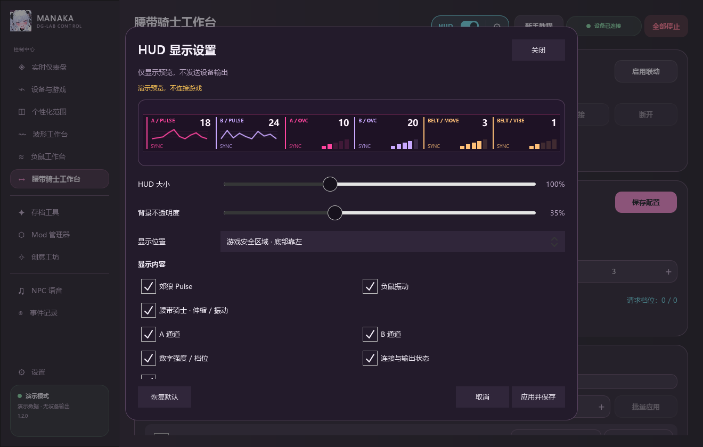
原作信息与版权归属
- 游戏全名
- 隐秘露出：真菜香的禁忌快感
Secret Flasher Manaka - 开发者／社团
- Sheable Soft
原游戏、角色、插画及相关权利归各自权利人所有。Manaka × DG-LAB 是独立的非官方配套工具，与游戏开发者无官方隶属或背书关系。
本插件及其下载内容不包含游戏本体。
- Original game
- Secret Flasher Manaka
- Developer / circle
- Sheable Soft
The original game, characters, artwork and related rights belong to their respective rights holders. Manaka × DG-LAB is an independent, unofficial companion and is not affiliated with or endorsed by the game developer.
The game itself is not included in this plugin or its downloads.
- 作品名
- 秘密のエクスポーズ バレないように露出するマナカさん
Secret Flasher Manaka - 開発者／サークル
- Sheable Soft
原作ゲーム、キャラクター、イラストおよび関連する権利は、それぞれの権利者に帰属します。Manaka × DG-LAB は独立した非公式の連携ツールであり、ゲーム開発者との提携・推奨関係はありません。
本プラグインおよび配布ファイルにゲーム本体は含まれません。
支持与交流
关注开发动态、加入技术交流群，或者请果果喝杯柠檬茶！
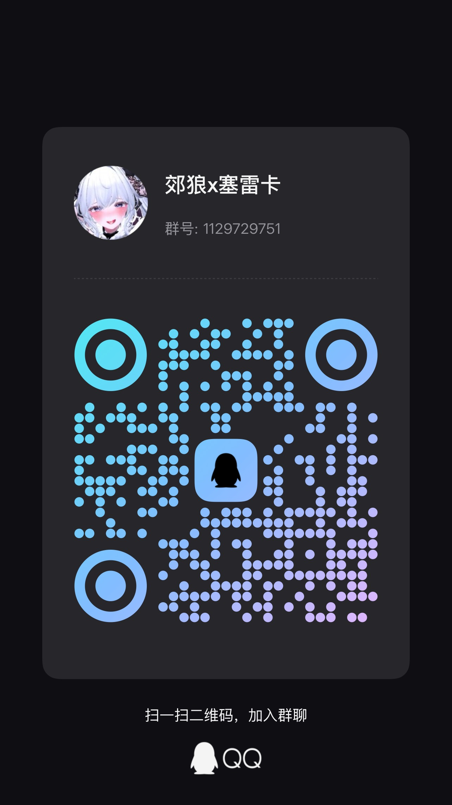
技术交流群
QQ群：1129729751
赞赏项目
感谢你对后续开发的支持
特别感谢
感谢 user9527 前辈的汉化与整合，以及 F95Zone Mod 作者们的创作。